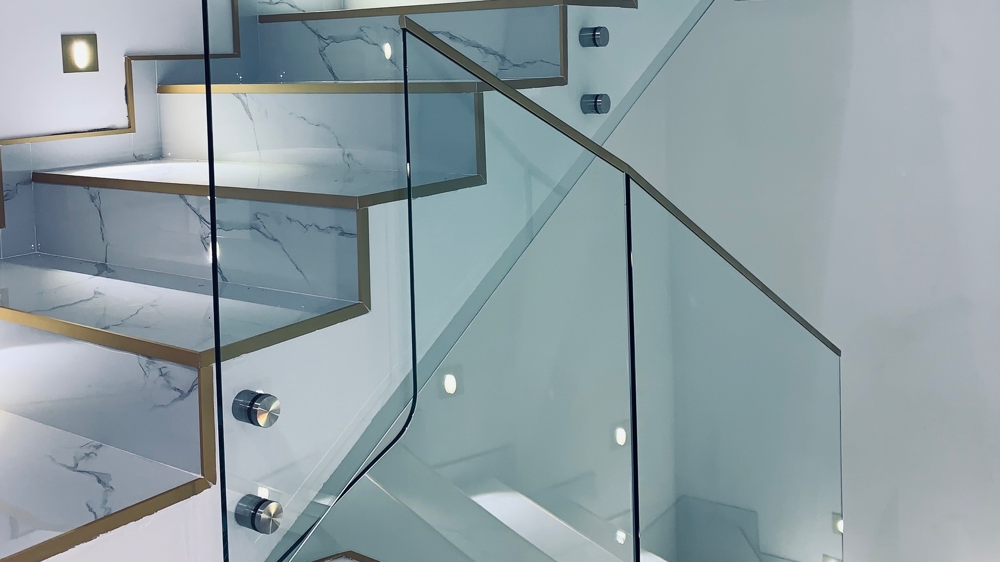

СТЕКЛЭС · МоскваСтекло.
Стекло.
В архитектуре дома.
Изготавливаем и монтируем ограждения, перегородки, козырьки и навесы из стекла и нержавеющей стали. Работаем с индивидуальными размерами.
Рассчитать конструкцию
ПРИМЕРЫ РЕШЕНИЙЛёгкость линий.
Лёгкость линий.
Точность деталей.
Рассмотрите стеклянные конструкции в интерьере и снаружи, форму ограждений и крепления. Обсудим размеры, назначение и подходящее исполнение под ваш объект.
Рассчитать конструкцию